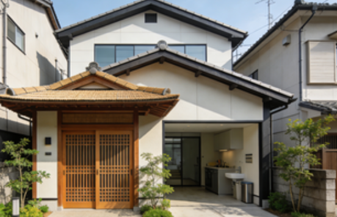

上京区（Kamigyo-ku）賃貸情報
上京区は京都御所周辺の伝統的市街地で、文化的雰囲気が漂うエリア。烏丸通沿いは交通アクセスが良好で、烏丸御池駅からは地下鉄烏丸線と東西線が利用可能で、京都全域への移動が容易。
京都御所周辺は静かな住宅街が広がり、伝統的な町並みが魅力。二条城近隣は商業施設も充実し、スーパーやレストランが集まって生活しやすい環境。ただし築年の古い物件が多いため、設備面で妥協が必要なケースがある。
上京区の特徴
- 特徴：京都御所周辺の伝統的市街地
- メリット：文化的雰囲気・交通利便性が高い・生活施設充実
- デメリット：築年の古い物件が多い・一部エリアは観光客で混雑する
- 賃料例：1R約60,000円〜、1K約70,000円〜、2LDK約120,000円〜
推奨物件タイプ

烏丸御池駅徒歩8分 1R：約60,000円。古民家を改装した物件で、伝統的な畳の部屋と現代的な設備が融合した雰囲気。
二条駅周辺 1DK：約78,000円。低層マンションで、駐車場付きの物件が多い。近隣に二条城があり、散歩コースとして人気。
京都御所近隣 2LDK：約110,000円。静かな住宅街に位置し、庭付きの物件も一部存在。家族層に人気の物件タイプ。